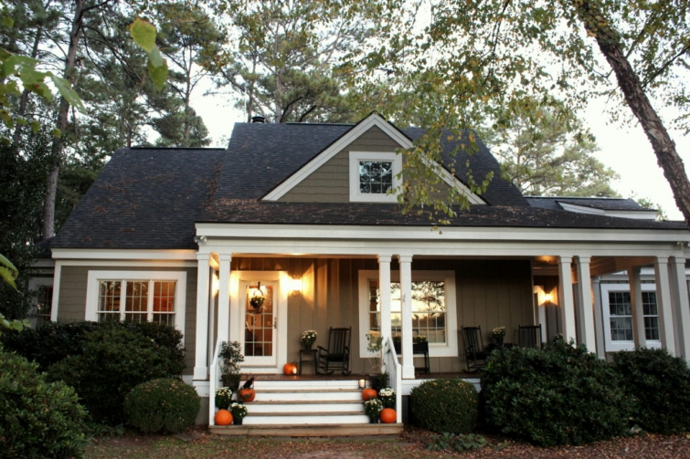
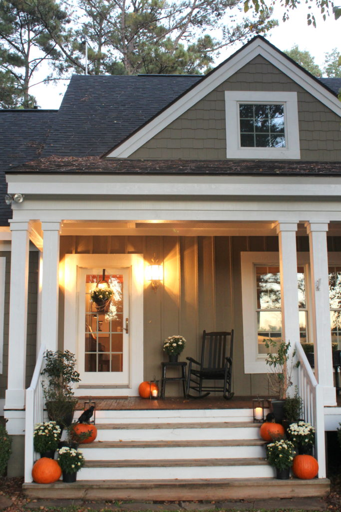
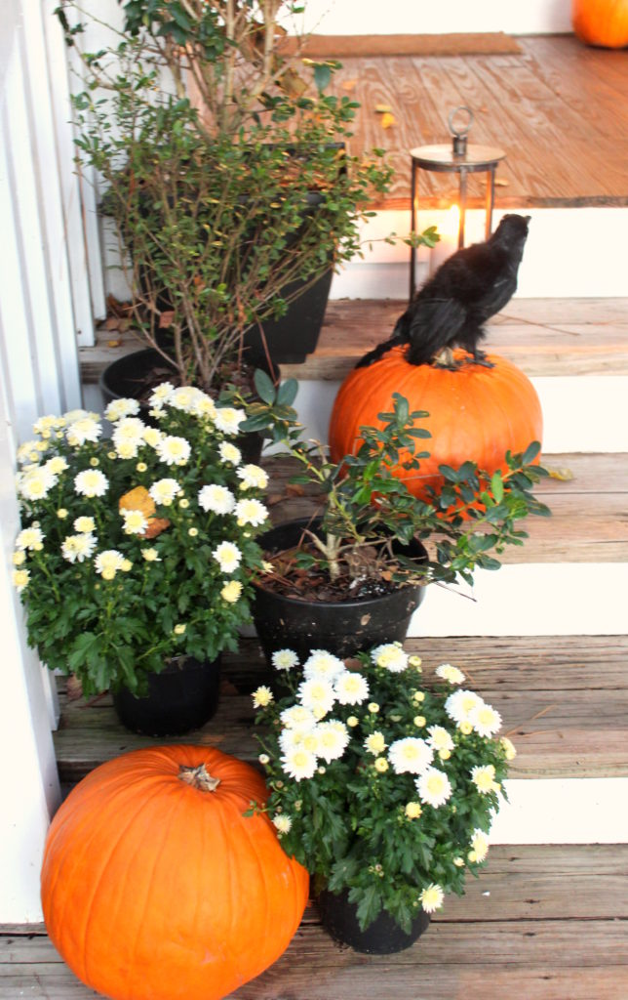

.png)
.PNG)
.PNG)
.PNG)
.PNG)
.PNG)
.JPG)
.JPG)
.PNG)
.PNG)


Happy November! I hope you had a fun Halloween and that you have lots of candy to enjoy today. Before I pull all of our Thanksgiving things down from the attic, I wanted you to see how the house looked last night. And if you have had just waaaaay too much Halloween, leave now and come back next year to read this post. 🙂 (I’m sure someone has a Christmas decorating post up somewhere in blogland. 😉 )

Every year I tell myself to add some “spooky” to our Halloween decorations, and every year I chicken out. But this year, I decided that black birds would be spooky without being gory.

So a few landed on our pumpkins on the front steps.
(Ignore the pitifully dying holly there. It is up for replacement.)

And another bird found himself in the door basket with a sign reading, “Nevermore.”


A couple more were perched outside the side door.


On the back side of the house, the screened porch was decked out in orange and black like the rest of the house.


I couldn’t resist a little more of the “bird theme” in the desk area.


A few birds flew in to the table and buffet area.
(Guess they were hungry! 🙂 )


An excerpt of Edgar Allan Poe’s poem, The Raven, was a perfect touch of spookiness for the chalkboard. No pretty lettering this time. I wanted it to appear old and kind of creepy.


I caged the bird on the table in a cage from Michaels.


All of the birds came from Michaels as well.

The black and white checked napkins came from Sur La Table a few years ago, and the pumpkin soup tureens were a purchased a number of years ago from Pottery Barn outlet.

This is about as spooky as I will ever get.

And I have to share our outfits (not costumes…just outfits. 🙂 ) Gabbie dressed as a cat. (What else would a dog find appropriate for Halloween? 🙂 )

And I pulled out my old Mickey Mouse shirt for the night.
So we both wore skeletons for Halloween. 🙂

This morning Gabbie’s shirt was folded and sitting on my desk (where everything gets piled. 🙁 ) She kept walking by, looking at it, and whining. So I took it off the desk, put it back on her, and she has been happy ever since. Guess she liked being dressed in her cat shirt! 🙂
Now this really does bring us to the end of Halloween for 2017. Time to move on to Thanksgiving! Even though I begin each day with a prayer of gratitude for all of my blessings, November is my designated “month of thanks.” So my first big thank you is to all of you for your super sweet comments in the last post. It was sooooo nice to be missed!! In a world of Instagram and Pinterest that seems to be filled with white rooms and white farmhouses, I often feel like I am an “odd man” and don’t quite fit in anywhere. So thank you for reminding me that everyone doesn’t have to look the same. Every one of us, in our own unique way, has something to offer, and each of us has our own special style. That’s what makes this life so interesting! 🙂 So thank you again for all your kind words. Know that they are very much appreciated!
Until next time…


.PNG)
Your decor turned out amazing here, love it! And how cute is your dog? OMG!
Your blog is still my most favorite. I love your style and I love color….they can keep all that white….little too boring for me! So glad you are back!
Have been looking forward to seeing you come back and show us your new updates.
Welcome back to the blog world. Good to see your home – and you – and that sweet Gabby. I second so many other comments that your ‘colorful’ home is a welcome relief from tan, beige, white and gray. Seriously? … yes, the “Tuscan” reds and golds were a bit much – but secretly I loved that period of decorating. I could do without the tassels and heavy fringe – but the rich hues were a treat for the eye. Thanks for bringing back color. Have a Happy Thanksgiving and bounteous holidays!
I personally LOVE that you don’t decorate everything in white! Your home is warm and lovely.
Thanks for coming back. I just love to see what creative things you do with the seasons and your home.
Hi Kelly,
First of all, you.look.mahvelous. Second, I know exactly what you mean about white and white. I find myself thinking ‘they all look the same’…why shouldn’t some of us dare to be different? And this coming from someone who lives in a white farmhouse (built in 1921).
So glad to see your recent blog posts. I enjoy seeing your decorations for the different seasons and you do inspire you readers to just be themselves and to enjoy the seasons! Gabby is a sweetie!
Kelly – Your home is beautiful and one of a kind. I enjoy seeing how you decorate for the holidays and how you are family oriented – that is what it is all about. We do not decorate with gory items either – just fun things. I also have the black birds. My granddaughter has been a big fan of Edgar Allan Poe since she was quite young and memorized some of his works. Since we do not live far from Baltimore we have taken her to various Poe places. She is now in her 20’s. We enjoy taking our grands to places they enjoy. Looking forward to seeing your home for Thanksgiving and Christmas. Blessings, Dorothy
As far as I’m concerned, your home is timeless, classic and inviting- a home that I would want to live in. I have spent many hours viewing and reading your posts. Your decorating, entertaining, creativity, travels and family stories have provided abundant inspiration and enjoyment. Your style and authenticity are the Kelly-magic that keep me coming back for more!!
I always love seeing your home and the new things you do – it expands my ideas on what I can do in my home. Blessings to you during this month of thankfulness!
You know what I love about this post, besides the fact that it is beautiful, you’ve shown me that this decorating is easy enough, I believe I could do it. Thank you for sharing your beautiful home with all of us. I am looking forward to holidays approaching and can’t wait to see what you have in store for all of us.
All the stark white is lovely but it’s a trend… it is so unimaginative and doesn’t allow us to incorporate keepsakes and heirlooms. Your warm cheerful pallet is TIMELESS and will stand the test long after all the matchy matchy white shiplap goes away where the other temporary fashions die. Never change! Your checks and real spaces are so comforting- so glad you are back!!
So happy you are back! Yay!
I’ve missed your beautiful home, Kelly!!!! I obviously missed the last post when you came back from your blog break, so off I go to check it out! Love your halloween decor, no surprise there as your house is pretty much PERFECT! Honestly, I’m so tired of seeing white houses everywhere and farmhouse style everything….it’s nice to see originality such as yours!
I love everything about your home! Inside and out! I love reading your blog because you make us feel like we know you, like you’re a friend! I enjoy that much more than just the pictures like you’ll get from instagram or pinterest. I enjoy the story that goes with the beautiful picture.
Hi Kelly! I have been a long time fan of your blog, I’ve just always been pretty quiet as far as commenting…sorry. But I wanted to tell you how much your home, travels, parties and… you, inspire me. I love interiors of almost all kinds, from trendy to traditional. And yours always speaks to me! Please don’t ever change your style, if it suits you and makes you happy, that’s all that matters. Keep being genuine, kind and fun and your fans will always be by your side! Have a wonderful weekend!
P.S. Gabbie is absolutely adorable!
Yay!! So glad you are back! I would check everyday and was excited to see a new post. I love your decorating style and it never occurred to me to compare you to other blogs that decorate white/farmhouse style. 🙂
What they all said….hurray….she’s back:)
This was just the BEST! It has been a long time coming and so appreciated! I have really missed you and your house! So good to see everything again — always homey and always different! Thank you! Enjoyed so much! Only 29 more days until our trip to The Big Apple 🍎! Maybe soon will be able to settle our insurance claim from Hurricane Irma—what an ordeal! 💕🙏💕 to you and yours!
You have been greatly missed. Glad you’ve finished up a good portion of the outside work so you can come back and visit with us again.
Gabbie is soooooo dog gone cute in her costume. Yes we have missed you and a Big Thankyou for sharing your beautiful home with us.
Kelly,
Love the blackbirds. That’s about as scary as I care to go as well. No creepy skeletons and monsters for me! Gabby is so cute.
Can’t wait to see your Thanksgiving house.
xo,
Karen
Love your Halloween decor….and so happy you are posting again! I have truly missed your blog posts. Your simple touches to your rooms each season reminds me that I do not have to go “all out” to make my home inviting…I can make each day special for my family by just making a few tweaks here and there! So, thanks for the inspiration you give to your readers! 🙂
Your home looks lovely…Halloweeny lovely! I know you’ve been busy…but it was nice of you to keep us updated. I look forward to seeing your home all dolled up for the holiday season! Now…get back to work…lol! 😉
I am so glad that you are back in our lives again. You were missed by many and I was hoping/praying you’d be back for the holidays. Love what you did for Halloween and can hardly wait to see Thanksgiving and then Christmas. Just something to share with you from your last post …. As I was shopping today everywhere I went was buffalo plaid. Hobby Lobby has a lot of it along with Target, pier One, etc. so keep using those plaids. They are most definitely in style. They are so welcoming. Thank you for sharing your life with all of us.
I’ve always enjoyed your wonderful blog post!! You are missed but I understand that you’ve got a lot on your plate right now. 🙂
Soooo glad you are back and blogging again! Each day I kept looking for your post. The Halloween decorations look super. The black birds added a spooky note, but just a touch of “spook”! The pumpkin tureens were charming on the holiday table, and I’m looking for some myself. Since the month of November is a thankful month, I guess I’ll start off by thanking you for your Talk of the House posts, once again.Glad you have returned
I love the bird and Edgar Allan Poe theme. (Have you ever been to Poe’s restaurant on Sullivan’s Island?) You are just so clever! One of the main things I love about your blog is that you don’t decorate with white. I remember when I first discovered your blog and was so happy I didn’t have to paint everything turquoise and orange. I was also glad I didn’t have to replace the gingham that I still loved. You rock and I am so glad you are back!!!
Oh ya brought me back to my days of eighth grade language arts and Mr. Edgar Alan Poe. Surest way to entice 13-14 yr. old boys to be attentive and write is to introduce them to Poe’s macabre stories and poetry. Always enjoy viewing your table settings. Now on to Thanksgiving.
Kelly, I am so grateful for your blog and your simple but elegant home. The Ravens we’re a great, subtle hint of Halloween. Every time you include porch photos, I swoon! ILOVE the design and ambiance… perfect. White is nice and clean, but character resounds in your lovely home. And it speaks volumes about you and your family. Thank you for allowing us to visit.
It was a treat to find your post in my inbox today!! Your Halloween décor looks great as your décor always does. I love seeing how you’ve done your porch and I have copied more than one of your ideas on my porch!!!! I can’t wait (hope, hope) to see Thanksgiving and Christmas décor from you!!! Hope you and your family are doing well!!
Welcome Kelly!!! All your and your husband’s hard work looks spectacular!
As always your holiday decorating is spooktacular!
All white (?) … oh my…. that’s just one of the reasons I love you…. it wouldn’t be pretty if there weren’t pops of red everywhere!!!
Gabbie didn’t know she would have to dress up. 😉 So good to “see” you too Kelly. 🙂 Like you, I’m moving on to Thanksgiving, not Christmas yet. Also, even though I love white walls, etc. I love your beautiful cozy home. It is very evident it is filled with love!!
Kelly,
So good to hear from you again! I love your decorations and your style! Thanks for sharing! Take care.
Dawn
What a pleasure to have you blogging again. I found myself wondering how your home repairs were coming and when you would be back to sharing. Love the birds and pumpkins, but especially all the color! Doesn’t it just make you smile? Thank you for the post and welcome to Thankful November 🍁🦃
Love, love, love it! Thank you for the inspiration for next year!
Kelly – Never Fear!!! Your home, your doggie and you are just perfect!! You are so right – we don’t have to follow all the trends….just feel good in our own skins!!! – we all look soooo forward to your posts!!! You have motivated me more than I can tell you!!! Keep ’em coming girl!! Many Blessings to you and your Family and Gabbie!!!!
Kelly – Never Fear!!! Your home, your doggie and you are just perfect!! You are so right – we don’t have to follow all the trends….just feel good in our own skins!!! – we all look soooo forward to your posts!!! You have motivated me more than I can tell you!!! Keep ’em coming girl!! Many Blessings to you and your Family and Gabbie!!!!
No white at my house either. I am just a fan of color – and changing the colors with the seasons. I think it’s the elementary teacher in us. 😊 Your Halloween is perfect! I don’t do scary either much to the chagrin of my grands😉
I’m glad you are back as well. Please consider posting more often. 😀. You were missed
What a fun post! So much to love. The best was Gabbie wanting to wear her shirt some more! I always assumed dogs didn’t really like to “dress up”, but just went along with it to humor their owners. So glad to know that at least one doggie enjoys it! Also loved The Raven theme.
Oh I’m sorry you feel like odd man out. I look forward to your posts! I love your style. You get everything just right!! Your home looks as though I could walk right in and feel welcomed….and then we’d have coffee.
Hi Kelly,
It’s so nice to have you blogging again! I love your home and your decorating style. I love Halloween but not the scary gory stuff that’s so popular now. I like the vintage Halloween, so I’m with you on scary!
Hope to see more of your blog as November moves along!
Maryanne
Hi Kelly, so glad to see your post. I have missed you do much!!!
We are so a like, I can’t do spooky for Halloween. I can do fall, but not Halloweenish.
Your house is beautiful and charming and so welcoming. Don’t get on the white band wagon.
Cindy
Love all the birds! You’ve got me thinking about next Halloween!
Thanks for the post! XOXO!
I didn’t realize how much I missed you until finding your email in my inbox yesterday. Welcome back ‘old friend’ 😍 I admire you and your husband for tackling these huge projects. Hope your completion draws near. Anyway, as always, I want to copy all,your ideas as your home is always warm and welcoming with enough simplicity that suits me well. I am very thankful for your blog and the happiness it brings me.
I didn’t realize how much I missed you until finding your email in my inbox yesterday. Welcome back ‘old friend’ 😍 I admire you and your husband for tackling these huge projects. Hope your completion draws near. Anyway, as always, I want to copy all,your ideas as your home is always warm and welcoming with enough simplicity that suits me well. I am very thankful for your blog and the happiness it brings me.
So glad that you are back. It was a long summer without your blogs. Your party/holiday decorations are always inspiring.
I love your home and decorating style! I am a newer reader to your blogs and was so happy to see you posted again.
That’s the sweetest story about Miss Gabbie. I don’t know what I’d do without my “wiggle butts”. Love all the decorations and can’t wait to see your plans for Thanksgiving.
Just viewing the outside of your house would let anyone know what a treat they were in for on the inside. It takes all kinds to make the decorating world go round, but I have to have some color. It makes me happy. I love your porches. I love the attention to detail that you give them. Your “Nevermore” theme was perfect! But, you know what, Kelly, I would always enjoy seeing your home, even if there was no theme. And the picture of you and Gabbie, well, that just is just “the cat’s meow!” 😉Thank you for sharing your endless creativity!!
What a Halloween treat it was to get TWO “Talk of the House” posts! The holiday season is feeling more festive already after that kickoff! Loved all your decorations. Your house looks fabulous, and so does Gabby! (Bet her trick-or-treat bag was filled to the top with doggie treats!)
Thanks for that delightful surprise!
Love it all! And I’ve always loved your home! Beautiful.
What a lovely Halloween. And now we are off to November! Thanks for posting Kelly. We all look so forward to your blog.
I’m glad you’re back too! I love the addition of the birds. They are very spooky! Can’t wait to see what you whip up for Thanksgiving, as I am hosting this year. Definitely LOVE your site!!
Thank you for Halloween Part II. I too love anything check but just couldn’t quite figure out how to use black and white check in my decor but it is perfect with orange for Halloween in my house. I look forward to adding it next Halloween. I so agree…love to decorate with color! 😃Thanks again for sharing with us.
Gabbie and all the decor is adorable. I am not that good at putting the scary stuff out either. I love the birds idea though. Your home and heart are always lovely.